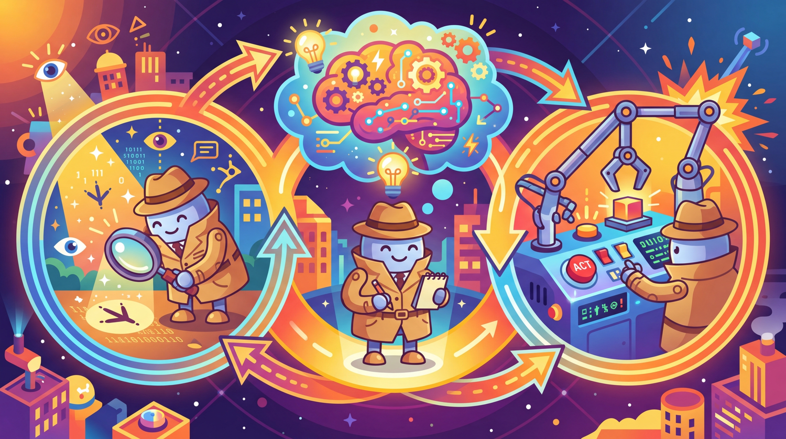
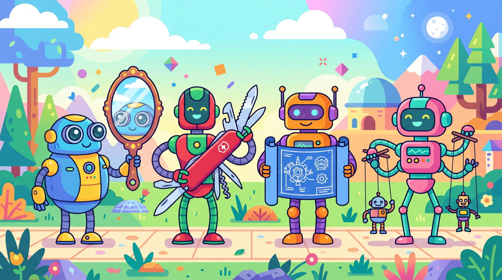

The best way to predict the future is to invent it. The second best way is to build an agent and let it figure things out.
Agent X, Self-Starting AI Agent
An AI agent is an LLM operating in a loop. Instead of producing a single response, an agent repeatedly perceives its environment, reasons about what to do, takes an action, and observes the result. This perception-reasoning-action cycle is the fundamental abstraction that transforms language models from passive text generators into active problem solvers. Understanding this loop, and the design patterns built on top of it, is essential for building any agentic system. The ReAct framework from Section 11.2 introduced the reasoning-plus-action pattern that agents formalize.
Prerequisites
This section assumes familiarity with LLM API basics from Section 10.1 and prompt engineering fundamentals from Section 11.1. An understanding of chain-of-thought reasoning from Section 11.2 will be particularly helpful, as the ReAct pattern builds directly on those ideas.
22.1.1 What Makes an Agent?
The term "agent" has been used loosely across the AI community, often applied to anything from a simple prompt chain to a fully autonomous system. To build effective agentic systems, we need precise definitions. An AI agent is a system that uses a language model to decide which actions to take and in what order, operating in a loop until a task is complete or a stopping condition is met. The critical distinction is autonomy in action selection: the model itself determines the next step rather than following a predetermined sequence.

The word "agent" comes from the Latin agere, meaning "to do." By that definition, most chatbots are really just "listeners" pretending to have a to-do list.
The Perception-Reasoning-Action Loop
Every agent, regardless of its complexity, follows the same fundamental cycle. The agent perceives its environment by receiving input (user messages, tool outputs, observations from previous actions). It then reasons about what to do next using the language model. Finally, it takes an action, which could be calling a tool, generating a response, or requesting more information. The results of that action become new perceptions, and the cycle repeats. Figure 22.1.3 depicts this fundamental loop.
Agents vs. Chains vs. Workflows
Understanding the spectrum from simple to complex orchestration helps clarify where agents fit. The hybrid ML/LLM decision framework from Chapter 12 can help determine whether a full agent is necessary or a simpler pipeline suffices. A chain is a fixed sequence of LLM calls with predetermined steps. A workflow uses conditional logic (if/else, loops) but with control flow defined by the developer. An agent gives the LLM itself control over the execution path. The model decides which tools to call, in what order, and when to stop.
| Aspect | Chain | Workflow | Agent |
|---|---|---|---|
| Control flow | Fixed sequence | Developer-defined conditionals | LLM-determined |
| Steps known in advance | Yes, always | Paths defined, selection dynamic | No, emergent |
| Determinism | High | Medium | Low |
| Error handling | Static retry logic | Branching on error type | Model reasons about recovery |
| Complexity | Simple | Moderate | High |
| Best for | Predictable pipelines | Structured tasks with variants | Open-ended problem solving |
Start with the simplest approach that works. Anthropic and other leading AI labs recommend using agents only when simpler patterns fail. Chains are easiest to debug and most predictable. Workflows add flexibility with manageable complexity. Agents provide maximum flexibility but introduce non-determinism, higher latency, and harder debugging. Choose the right level of autonomy for your use case.
Readers often confuse "agentic" with "autonomous" or even "AGI." An LLM agent is not a sentient system making independent decisions; it is a loop where a language model repeatedly selects the next action from a predefined set of tools. The model has no goals of its own, no persistent state beyond what the developer provides, and no ability to act outside its tool set. When an agent "decides" to call a search API, it is producing a structured text output that matches a tool schema. The autonomy is in action selection within a constrained loop, not in general intelligence. This distinction matters for both engineering (agents need guardrails, not trust) and for setting realistic expectations with stakeholders.
22.1.2 The Four Agentic Design Patterns
Andrew Ng identified four foundational agentic design patterns that appear across virtually all agent architectures. These patterns can be used individually or composed together, and understanding them provides a vocabulary for designing and analyzing agentic systems.

Pattern 1: Reflection
In the reflection pattern, the LLM reviews its own output and iteratively improves it. This can be as simple as asking the model to critique its response, or as sophisticated as having separate "generator" and "critic" roles. Reflection is powerful because it lets the model catch errors, improve quality, and refine its approach without external feedback. Code Fragment 22.1.2 below puts this into practice.
# implement reflect_and_improve
# Key operations: API interaction
import openai
client = openai.OpenAI()
def reflect_and_improve(task: str, max_rounds: int = 3) -> str:
"""Generate a response, then iteratively improve it via self-reflection."""
# Step 1: Generate initial response
draft = client.chat.completions.create(
model="gpt-4o",
messages=[{"role": "user", "content": task}]
).choices[0].message.content
for round_num in range(max_rounds):
# Step 2: Critique the current draft
critique = client.chat.completions.create(
model="gpt-4o",
messages=[
{"role": "system", "content": "You are a critical reviewer. Find flaws, "
"gaps, and areas for improvement. Be specific."},
{"role": "user", "content": f"Task: {task}\n\nDraft:\n{draft}\n\n"
f"Provide specific, actionable critique."}
]
).choices[0].message.content
# Step 3: Check if quality is satisfactory
if "no major issues" in critique.lower():
break
# Step 4: Revise based on critique
draft = client.chat.completions.create(
model="gpt-4o",
messages=[
{"role": "system", "content": "Revise the draft to address all critique points."},
{"role": "user", "content": f"Original task: {task}\n\n"
f"Current draft:\n{draft}\n\n"
f"Critique:\n{critique}\n\nRevised version:"}
]
).choices[0].message.content
return draftPattern 2: Tool Use
Tool use extends the LLM beyond text generation by giving it the ability to call external functions: searching the web, querying databases, executing code, sending emails, or interacting with any API. The model receives tool descriptions, decides when and which tools to call, and incorporates the results into its reasoning. This is covered in depth in Section 22.7.
Tool use is architecturally significant, not merely an API feature. When a model gains the ability to call external functions, it transitions from a closed system (bounded by its training data) to an open system that can interact with the live world. This is the same leap that distinguishes a calculator from a spreadsheet connected to a database. The model's role shifts from "answer generator" to "action coordinator," and the design constraints change accordingly: latency now depends on external services, reliability depends on tool robustness, and safety requires controlling what actions the model can take. Chapter 23 explores these architectural implications in depth, including standardized protocols like MCP and A2A that formalize tool interfaces.
Pattern 3: Planning
Planning involves the LLM decomposing a complex task into subtasks before executing them. Rather than acting step by step reactively, a planning agent creates an explicit plan, then executes each step while potentially revising the plan based on intermediate results. Plan-and-execute architectures, reflection loops, and tree search methods all fall under this pattern. Section 22.3 covers planning in detail.
Pattern 4: Multi-Agent Collaboration
In the multi-agent pattern, multiple LLM instances (each potentially with different system prompts, tools, or roles) collaborate to solve a problem. One agent might research while another writes; a supervisor agent might coordinate workers; or agents might debate to reach a consensus. Chapter 23 is dedicated entirely to multi-agent architectures. Figure 22.1.5 summarizes these four patterns.
22.1.3 The ReAct Framework
ReAct (Reasoning + Acting) is the most widely adopted agent architecture. We introduced ReAct as a prompting pattern in Section 11.2; here we build it into a full agent system with tool execution, state management, and error handling. Algorithm 1 formalizes the ReAct loop.
Input: user task T, tool set {tool_1, ..., tool_n}, LLM M, max steps S
Output: final answer or action result
1. Initialize context = [system_prompt, T]
2. for step = 1 to S:
a. Thought: response = M(context)
The LLM reasons about current state, what is known, what is needed
b. if response contains FINAL_ANSWER:
return extracted answer
c. Action: parse tool_name and arguments from response
d. Observation: result = execute(tool_name, arguments)
e. Append (Thought, Action, Observation) to context
3. return "Max steps reached without resolution"
The key insight is that the explicit reasoning in step 2a (the "Thought") dramatically improves decision quality compared to acting without thinking or thinking without acting. Each thought provides a chain-of-reasoning that is also valuable for debugging when the agent makes mistakes.
Why ReAct works better than pure chain-of-thought for agents. Pure chain-of-thought (CoT) reasons in a closed loop: the model thinks step by step but never checks its reasoning against reality. ReAct adds grounding by interleaving reasoning with real-world observations from tool calls. When the model hypothesizes "the bug is in the authentication module," CoT continues reasoning from that hypothesis whether or not it is correct. ReAct instead calls a search tool, observes actual code, and corrects course if the hypothesis was wrong. This grounding effect is why ReAct agents outperform CoT-only approaches on tasks requiring factual accuracy, external data, or multi-step verification. The trade-off is latency: each tool call adds seconds to the total execution time.
# Define ReActAgent; implement __init__, run, _execute_action
# Key operations: agent orchestration, tool integration, prompt construction
from typing import Callable
class ReActAgent:
"""Minimal ReAct agent: Thought -> Action -> Observation loop."""
def __init__(self, client, tools: dict[str, Callable], model: str = "gpt-4o"):
self.client = client
self.tools = tools
self.model = model
def run(self, task: str, max_steps: int = 10) -> str:
# Build tool descriptions for the system prompt
tool_desc = "\n".join(
f"- {name}: {func.__doc__}" for name, func in self.tools.items()
)
system_prompt = f"""You are a ReAct agent. For each step:
1. Thought: Reason about the current state and what to do next
2. Action: Call a tool using the format: ACTION: tool_name(args)
3. Wait for Observation (tool result)
When you have the final answer, respond: FINAL ANSWER: [your answer]
Available tools:
{tool_desc}"""
messages = [
{"role": "system", "content": system_prompt},
{"role": "user", "content": task}
]
for step in range(max_steps):
response = self.client.chat.completions.create(
model=self.model,
messages=messages
).choices[0].message.content
messages.append({"role": "assistant", "content": response})
# Check for final answer
if "FINAL ANSWER:" in response:
return response.split("FINAL ANSWER:")[1].strip()
# Parse and execute action
if "ACTION:" in response:
action_str = response.split("ACTION:")[1].strip()
observation = self._execute_action(action_str)
messages.append({
"role": "user",
"content": f"Observation: {observation}"
})
return "Max steps reached without final answer."
def _execute_action(self, action_str: str) -> str:
# Parse "tool_name(args)" format and execute
try:
name = action_str.split("(")[0].strip()
args_str = action_str.split("(", 1)[1].rsplit(")", 1)[0]
if name in self.tools:
return str(self.tools[name](args_str))
return f"Error: Unknown tool '{name}'"
except Exception as e:
return f"Error executing action: {e}"The ReAct implementation above uses text parsing for simplicity. In production, you would use the provider's native function calling API (covered in Section 22.7), which gives structured JSON outputs instead of requiring text parsing. The conceptual loop is the same: think, act, observe.
ReAct Trace Example
A typical ReAct trace shows the interleaved thought-action-observation pattern. Notice how the agent explicitly reasons before each action, and how observations feed back into the next reasoning step. Code Fragment 22.1.4 below puts this into practice.
# Example trace for: "What is the population of the capital of France?"
Thought: I need to find the capital of France, then look up its population.
The capital of France is Paris, but let me verify and get the
current population figure.
Action: search("Paris population 2024")
Observation: Paris has a city population of approximately 2.1 million
and a metropolitan area population of about 12.3 million.
Thought: I now have the information. The capital of France is Paris,
with a city population of about 2.1 million. I should provide
both the city and metro figures for completeness.
FINAL ANSWER: The capital of France is Paris, with a city population
of approximately 2.1 million and a metropolitan area population
of about 12.3 million.22.1.4 Cognitive Architectures and State Machines
As agents grow more complex, the simple ReAct loop becomes insufficient. Cognitive architectures provide a richer framework for organizing agent behavior by introducing explicit state management, memory systems, and structured decision-making processes. A cognitive architecture defines how an agent thinks, not just what it thinks about.
Agent State Machines
Many production agents are best modeled as state machines, where the agent transitions between well-defined states based on its observations and decisions. This provides predictability and debuggability while still allowing the LLM to make autonomous decisions within each state. Figure 22.1.6 shows the agent state machine with its transitions. Code Fragment 22.1.5 below puts this into practice.
# Define AgentState, AgentContext, StatefulAgent; implement __init__, run, _handle_planning
# Key operations: agent orchestration, tool integration, API interaction
from enum import Enum
from dataclasses import dataclass, field
class AgentState(Enum):
PLANNING = "planning"
EXECUTING = "executing"
REFLECTING = "reflecting"
WAITING_FOR_HUMAN = "waiting_for_human"
COMPLETE = "complete"
ERROR = "error"
@dataclass
class AgentContext:
"""Tracks the full state of an agent's execution."""
task: str
state: AgentState = AgentState.PLANNING
plan: list[str] = field(default_factory=list)
completed_steps: list[str] = field(default_factory=list)
observations: list[dict] = field(default_factory=list)
current_step_index: int = 0
error_count: int = 0
max_errors: int = 3
class StatefulAgent:
"""Agent that operates as a state machine with explicit transitions."""
def __init__(self, client, tools):
self.client = client
self.tools = tools
self.transitions = {
AgentState.PLANNING: self._handle_planning,
AgentState.EXECUTING: self._handle_executing,
AgentState.REFLECTING: self._handle_reflecting,
AgentState.ERROR: self._handle_error,
}
def run(self, task: str) -> str:
ctx = AgentContext(task=task)
while ctx.state not in (AgentState.COMPLETE, AgentState.WAITING_FOR_HUMAN):
handler = self.transitions.get(ctx.state)
if handler:
ctx = handler(ctx)
else:
break
return self._format_result(ctx)
def _handle_planning(self, ctx: AgentContext) -> AgentContext:
# LLM creates a step-by-step plan
plan = self._call_llm(
f"Break this task into concrete steps:\n{ctx.task}"
)
ctx.plan = self._parse_plan(plan)
ctx.state = AgentState.EXECUTING
return ctx
def _handle_executing(self, ctx: AgentContext) -> AgentContext:
if ctx.current_step_index >= len(ctx.plan):
ctx.state = AgentState.REFLECTING
return ctx
step = ctx.plan[ctx.current_step_index]
try:
result = self._execute_step(step, ctx)
ctx.observations.append({"step": step, "result": result})
ctx.completed_steps.append(step)
ctx.current_step_index += 1
except Exception as e:
ctx.error_count += 1
ctx.state = AgentState.ERROR if ctx.error_count >= ctx.max_errors \
else AgentState.EXECUTING
return ctx
def _handle_reflecting(self, ctx: AgentContext) -> AgentContext:
# LLM reviews results and decides: complete or replan
assessment = self._call_llm(
f"Task: {ctx.task}\nCompleted: {ctx.completed_steps}\n"
f"Results: {ctx.observations}\n\n"
f"Is the task fully complete? If not, what remains?"
)
if "complete" in assessment.lower():
ctx.state = AgentState.COMPLETE
else:
ctx.state = AgentState.PLANNING # Replan with new context
return ctx22.1.5 Agent Memory Systems
Effective agents require memory that goes beyond the conversation history within a single context window. Agent memory can be categorized into three types, each serving a different purpose and operating at a different timescale.
Working Memory (Short-Term)
Working memory holds the current conversation context, including the system prompt, user messages, tool calls and their results, and the agent's reasoning traces. This maps directly to the LLM's context window and is the most straightforward form of memory. The challenge is that it is bounded: as the agent takes more actions, the context window fills up.
Episodic Memory (Session-Based)
Episodic memory stores records of past interactions, allowing agents to recall previous conversations, successful strategies, and common user preferences. This is typically implemented via Chapter 19) or structured databases that the agent can query.
Semantic Memory (Long-Term Knowledge)
Semantic memory stores factual knowledge, learned procedures, and domain-specific information. This includes the agent's tool documentation, domain knowledge bases, and procedural memory about how to accomplish recurring tasks. RAG systems (Chapter 20) are the primary mechanism for semantic memory. Code Fragment 22.1.6 below puts this into practice.
# Define AgentMemory; implement add_to_working, save_episode, recall_relevant
# Key operations: retrieval pipeline, vector search, agent orchestration
from dataclasses import dataclass, field
from datetime import datetime
@dataclass
class AgentMemory:
"""Three-tier memory system for an AI agent."""
# Working memory: current context window contents
working: list[dict] = field(default_factory=list)
max_working_tokens: int = 100_000
# Episodic memory: past interaction summaries
episodes: list[dict] = field(default_factory=list)
# Semantic memory: learned facts and procedures
knowledge: dict[str, str] = field(default_factory=dict)
def add_to_working(self, message: dict):
"""Add a message to working memory, evicting old entries if needed."""
self.working.append(message)
self._evict_if_needed()
def save_episode(self, summary: str, outcome: str):
"""Save a completed interaction to episodic memory."""
self.episodes.append({
"timestamp": datetime.now().isoformat(),
"summary": summary,
"outcome": outcome
})
def recall_relevant(self, query: str, top_k: int = 3) -> list[dict]:
"""Retrieve relevant episodes (in production, use vector similarity)."""
# Simplified: in practice, embed query and search vector store
return self.episodes[-top_k:]
def _evict_if_needed(self):
"""Summarize and evict old messages when context is too large."""
# Estimate token count (rough: 4 chars per token)
total = sum(len(str(m)) // 4 for m in self.working)
while total > self.max_working_tokens and len(self.working) > 2:
# Summarize oldest messages and replace them
removed = self.working.pop(1) # Keep system prompt at index 0
self.save_episode(str(removed)[:200], "evicted")
total = sum(len(str(m)) // 4 for m in self.working)Token budgets are the primary constraint on agent capabilities. Every tool call result, observation, and reasoning trace consumes tokens from the context window. A single web search might return several thousand tokens. An agent that calls ten tools could easily consume 50,000+ tokens before generating its final response. Careful management of what goes into and out of the context window is essential for agents that need to take many steps.
Reflexion: Learning from Failure Through Self-Reflection
The Reflexion framework (Shinn et al., 2023) extends the basic reflection pattern into a full learning architecture. While the simple reflection loop (generate, critique, revise) operates within a single task attempt, Reflexion operates across multiple attempts: the agent tries a task, evaluates its performance, generates a natural language reflection on what went wrong, stores that reflection in memory, and uses it to improve on subsequent attempts. This creates a form of "verbal reinforcement learning" where the reward signal is translated into natural language lessons.
Why does this matter? Standard agents repeat the same mistakes across sessions because they have no mechanism for learning from failure. A coding agent that hits a specific type of error will make the same mistake every time it encounters a similar problem. Reflexion gives agents an explicit learning loop: fail, reflect, remember, improve.
The Act / Evaluate / Reflect / Store Loop
Reflexion operates in four phases. In the Act phase, the agent attempts the task using its current approach plus any stored reflections from previous attempts. In the Evaluate phase, the agent (or an external evaluator) assesses whether the attempt succeeded, using task-specific criteria (test cases for code, factual accuracy for QA, goal completion for planning). In the Reflect phase, if the attempt failed, the agent generates a natural language analysis of what went wrong and what to try differently. In the Store phase, the reflection is saved to episodic memory and prepended to the prompt on the next attempt.
The results speak for themselves. On HumanEval (a coding benchmark), Reflexion achieved 91.0% accuracy, compared to 67.0% for standard GPT-4 and 80.1% for GPT-4 with simple retry. The gains come not from better base capabilities but from the agent's ability to learn from its own mistakes within a single problem-solving session. Each failed attempt provides specific, actionable feedback ("the function fails on edge case where input is an empty list") that directly improves the next attempt.
Reflexion succeeds because self-generated reflections are more useful than generic error messages. When a coding agent gets an assertion error, the raw traceback says "AssertionError at line 12." A Reflexion agent says "My function does not handle the empty list case. I assumed the input would always have at least one element. On the next attempt, I should add an early return for empty inputs." This structured self-diagnosis, stored in memory, prevents the same class of error on future attempts. The memory mechanism connects to the conversational memory patterns in Section 21.3.
# Reflexion agent for code generation tasks
from openai import OpenAI
import subprocess
import sys
client = OpenAI()
class ReflexionAgent:
"""Agent that learns from failures through self-reflection."""
def __init__(self, max_attempts: int = 4):
self.max_attempts = max_attempts
self.reflections: list[str] = []
def solve(self, task: str, test_cases: str) -> str:
"""Attempt to solve a coding task, learning from failures."""
for attempt in range(self.max_attempts):
# ACT: Generate code with reflections as context
reflection_context = ""
if self.reflections:
reflection_context = (
"Lessons from previous attempts:\n"
+ "\n".join(f"- {r}" for r in self.reflections)
+ "\n\nUse these lessons to avoid repeating mistakes.\n\n"
)
code = client.chat.completions.create(
model="gpt-4o",
messages=[{
"role": "user",
"content": (
f"{reflection_context}"
f"Write a Python function to solve this task:\n{task}\n\n"
f"Return only the function code."
)
}],
temperature=0.2
).choices[0].message.content
# EVALUATE: Run test cases
success, output = self._run_tests(code, test_cases)
if success:
print(f"Solved on attempt {attempt + 1}!")
return code
# REFLECT: Generate a reflection on the failure
reflection = client.chat.completions.create(
model="gpt-4o",
messages=[{
"role": "user",
"content": (
f"My code for this task failed:\n"
f"Task: {task}\n"
f"Code: {code}\n"
f"Error: {output}\n\n"
f"In 1-2 sentences, explain what went wrong "
f"and what specific change would fix it."
)
}],
temperature=0
).choices[0].message.content
# STORE: Save reflection for next attempt
self.reflections.append(reflection)
print(f"Attempt {attempt + 1} failed. Reflection: {reflection}")
return "Failed after max attempts"
def _run_tests(self, code: str, test_cases: str) -> tuple[bool, str]:
"""Execute code with test cases and return (success, output)."""
full_code = f"{code}\n\n{test_cases}"
try:
result = subprocess.run(
[sys.executable, "-c", full_code],
capture_output=True, text=True, timeout=10
)
if result.returncode == 0:
return True, result.stdout
return False, result.stderr
except subprocess.TimeoutExpired:
return False, "Timeout: code took more than 10 seconds"
# Usage
agent = ReflexionAgent(max_attempts=4)
solution = agent.solve(
task="Write a function 'flatten(lst)' that flattens arbitrarily nested lists.",
test_cases="""
assert flatten([1, [2, 3], [4, [5, 6]]]) == [1, 2, 3, 4, 5, 6]
assert flatten([]) == []
assert flatten([[[[1]]]]) == [1]
assert flatten([1, 2, 3]) == [1, 2, 3]
print("All tests passed!")
"""
)Graph-Based Agent Memory
Vector-based memory (Section 5 above) excels at finding semantically similar past experiences, but it struggles with a specific class of queries: those requiring relational reasoning across multiple pieces of information. If an agent remembers that "Alice manages the payments team" and "the payments team owns the billing microservice," a vector search for "who owns the billing microservice" might not surface the answer because neither memory directly mentions Alice in the context of the billing service. Graph-based memory solves this by storing information as knowledge graph triples (subject, predicate, object) and supporting multi-hop traversal.
Why does this matter for agents? Agents operating in complex environments accumulate knowledge about entities and their relationships: which tools are available for which tasks, which API endpoints serve which data, which team members have which expertise. Flat vector memory treats each piece of knowledge independently. Graph memory preserves the connections between entities, enabling the agent to answer questions that require combining multiple facts.
When Graph Memory Beats Vector Memory
Graph memory outperforms vector memory in three specific scenarios. First, multi-hop queries that require chaining two or more facts: "What is the timezone of the server that hosts the billing service?" requires looking up the server, then looking up its timezone. Second, relationship queries where the connection between entities matters: "Which teams does Alice collaborate with?" requires traversing relationship edges, not finding similar text. Third, consistency enforcement where adding a new fact should propagate updates: if "Alice moved to the infrastructure team," all downstream facts about Alice's team assignments should update. The knowledge graph RAG patterns in Section 20.5 provide additional context on graph-structured retrieval.
# Graph-based agent memory using triples
from dataclasses import dataclass, field
from typing import Optional
@dataclass
class Triple:
"""A knowledge graph triple: (subject, predicate, object)."""
subject: str
predicate: str
object: str
confidence: float = 1.0
source: str = "" # which conversation produced this
timestamp: float = 0.0
class GraphMemory:
"""Knowledge graph memory for agents with multi-hop query support."""
def __init__(self):
self.triples: list[Triple] = []
self.entity_index: dict[str, list[int]] = {} # entity -> triple indices
def add(self, subject: str, predicate: str, obj: str,
confidence: float = 1.0, source: str = "") -> None:
"""Add a triple, updating if a conflicting triple exists."""
import time
# Check for conflicting triple (same subject + predicate)
for i, t in enumerate(self.triples):
if t.subject == subject and t.predicate == predicate:
# Update with new information
self.triples[i] = Triple(
subject, predicate, obj,
confidence, source, time.time()
)
return
triple = Triple(subject, predicate, obj,
confidence, source, time.time())
idx = len(self.triples)
self.triples.append(triple)
# Index by both subject and object for traversal
self.entity_index.setdefault(subject.lower(), []).append(idx)
self.entity_index.setdefault(obj.lower(), []).append(idx)
def query(self, subject: Optional[str] = None,
predicate: Optional[str] = None,
obj: Optional[str] = None) -> list[Triple]:
"""Find triples matching the given pattern (None = wildcard)."""
results = []
for t in self.triples:
if subject and t.subject.lower() != subject.lower():
continue
if predicate and t.predicate.lower() != predicate.lower():
continue
if obj and t.object.lower() != obj.lower():
continue
results.append(t)
return results
def multi_hop(self, start_entity: str, hops: int = 2) -> dict:
"""Traverse the graph from an entity up to N hops."""
visited = set()
current_layer = {start_entity.lower()}
all_facts = {}
for hop in range(hops):
next_layer = set()
for entity in current_layer:
if entity in visited:
continue
visited.add(entity)
triples = self.query(subject=entity)
triples += self.query(obj=entity)
for t in triples:
key = f"{t.subject} -> {t.predicate} -> {t.object}"
all_facts[key] = t
next_layer.add(t.subject.lower())
next_layer.add(t.object.lower())
current_layer = next_layer - visited
return all_facts
# Usage: Agent builds knowledge graph from observations
graph = GraphMemory()
# Agent learns facts during tool use
graph.add("billing-service", "hosted_on", "us-east-prod-3")
graph.add("us-east-prod-3", "timezone", "America/New_York")
graph.add("Alice", "manages", "payments-team")
graph.add("payments-team", "owns", "billing-service")
# Multi-hop query: "What timezone is the billing service in?"
facts = graph.multi_hop("billing-service", hops=2)
for fact_key, triple in facts.items():
print(f" {fact_key}")
# billing-service -> hosted_on -> us-east-prod-3
# us-east-prod-3 -> timezone -> America/New_York
# payments-team -> owns -> billing-service
# Alice -> manages -> payments-teamIn practice, many production agents combine both vector memory and graph memory. Vector memory handles fuzzy semantic retrieval ("find past conversations similar to this one"), while graph memory handles structured relational queries ("what does Alice's team own?"). The GraphRAG patterns from Section 20.5 scale this approach to large knowledge bases. Memory-as-a-service platforms like Mem0 and Zep (Section 21.3) are increasingly adding graph-based storage alongside their vector stores.
5b. Procedural Memory: Skill Libraries
The three-tier memory model (working, episodic, semantic) captures what happened and what the agent knows, but it misses a crucial dimension: how to do things. Procedural memory stores reusable tool-use patterns, multi-step recipes, and learned strategies that the agent can invoke when it encounters a familiar situation. While episodic memory records "I searched the database and found the answer in the users table," procedural memory records "when asked to find user data, first check the users table, then join with the profiles table for additional fields."
Episodic vs. Semantic vs. Procedural Memory
These three memory types serve distinct roles. Episodic memory stores specific experiences: what happened, when, and in what context. It answers questions like "What did I do last time the user asked about billing?" Semantic memory stores factual knowledge: entities, relationships, and general truths. It answers "What is the billing API endpoint?" Procedural memory stores skills: sequences of actions that achieve goals. It answers "How do I resolve a billing dispute?" The distinction matters because procedural knowledge generalizes across contexts in ways that episodic memory cannot. An agent with a "resolve billing dispute" skill can apply it to any customer, while an episodic memory of one specific dispute is harder to transfer.
Voyager: A Skill Library That Grows
The Voyager system (Wang et al., 2023) demonstrated procedural memory in the Minecraft game environment. Voyager's agent builds a skill library of reusable JavaScript functions, each representing a learned behavior (mine wood, build a shelter, craft a pickaxe). When the agent encounters a new task, it first searches the skill library for relevant existing skills before attempting to write new code. Successfully verified skills are added to the library, creating a growing repertoire of capabilities. The key insight is that skills compose: "build a house" can call "mine wood," "craft planks," and "place blocks" as subroutines. This compositional structure enables the agent to tackle increasingly complex tasks without relearning basic behaviors.
Skill Library Lookup in Practice
The following pseudocode illustrates the core pattern of a skill library that stores, retrieves, and composes procedural knowledge.
# Skill library: procedural memory for agents
from dataclasses import dataclass
from typing import Callable
@dataclass
class Skill:
name: str
description: str # natural language description for retrieval
preconditions: list[str] # what must be true before execution
code: str # the executable procedure
success_count: int = 0 # reinforcement signal
class SkillLibrary:
def __init__(self, embed_fn, threshold=0.75):
self.skills: dict[str, Skill] = {}
self.embed_fn = embed_fn
self.threshold = threshold
def add_skill(self, skill: Skill):
"""Store a verified skill in the library."""
self.skills[skill.name] = skill
def retrieve(self, task_description: str, top_k=3) -> list[Skill]:
"""Find skills relevant to the current task via embedding similarity."""
task_emb = self.embed_fn(task_description)
scored = []
for skill in self.skills.values():
sim = cosine_similarity(task_emb, self.embed_fn(skill.description))
if sim >= self.threshold:
scored.append((sim, skill))
scored.sort(key=lambda x: -x[0])
return [s for _, s in scored[:top_k]]
def compose(self, skill_names: list[str]) -> str:
"""Chain multiple skills into a composite procedure."""
steps = []
for name in skill_names:
if name in self.skills:
steps.append(f"# Step: {name}\n{self.skills[name].code}")
return "\n\n".join(steps)
# Usage: agent checks library before writing new code
relevant_skills = library.retrieve("gather wood and build a crafting table")
if relevant_skills:
plan = library.compose([s.name for s in relevant_skills])
else:
plan = llm_generate_new_skill(task_description)Procedural memory transforms agents from systems that solve each problem from scratch into systems that accumulate expertise over time. The critical design choice is the granularity of skills: too coarse (entire workflows) and skills rarely transfer; too fine (individual API calls) and the overhead of lookup exceeds the benefit. A practical guideline is to store skills at the level of a "meaningful sub-goal," roughly 3 to 10 tool calls that together accomplish a recognizable task.
22.1.6 Token Budget Management
Token management is one of the most practical challenges in building agents. Unlike a single-turn completion where you control the input size, agents accumulate context over many iterations. Without careful budgeting, agents hit context limits, lose important early context, or incur excessive costs.
Strategies for Managing Token Budgets
- Summarize tool outputs: Instead of including raw API responses, extract only the relevant fields. A search result page might be 10,000 tokens raw but only 200 tokens of useful information.
- Sliding window with summarization: Periodically summarize older conversation turns and replace them with a compact summary, keeping recent turns intact.
- Tiered context priority: Assign priorities to different message types. System prompts and the current task have highest priority; old tool results have lowest priority and are evicted first.
- Lazy loading: Instead of loading all context upfront, fetch information only when the agent needs it. Store tool descriptions in a separate index and inject only the ones the agent requests.
- Step limits: Set hard limits on the number of agent iterations. If the agent cannot solve a task in N steps, it should report what it found and ask for guidance.
| Strategy | Token Savings | Implementation | Risk |
|---|---|---|---|
| Summarize tool outputs | 50-90% | LLM-based or rule-based extraction | May lose relevant details |
| Sliding window | Variable | Drop oldest N messages | Loses early context |
| Tiered priority eviction | 30-60% | Score and rank all messages | Complex priority logic |
| Lazy tool loading | 20-40% | Tool registry with on-demand injection | Extra LLM call to select tools |
| Hard step limits | Bounded | Counter in agent loop | May not complete complex tasks |
The best agents are frugal with their context. Every token in the context window should earn its place. Production agents typically combine multiple strategies: summarizing tool outputs immediately, using a sliding window for conversation history, and imposing step limits as a safety net. The goal is to maintain the information density of the context while staying well within token limits.
22.1.7 Designing for Failure
Agents fail in ways that are qualitatively different from non-agentic systems. A simple chain either succeeds or produces an error. An agent can get stuck in loops, waste tokens on unproductive actions, misinterpret tool outputs, or take increasingly erratic actions as its context window degrades. Robust agent design requires anticipating and handling these failure modes. Chapter 29 covers how to observe and measure these failures in production.
Common Agent Failure Modes
- Infinite loops: The agent repeats the same action because it does not recognize that the result is unchanged. Always implement a maximum step counter.
- Tool misuse: The agent calls a tool with invalid arguments or misinterprets the output. Clear tool descriptions and structured error messages help.
- Goal drift: Over many steps, the agent gradually shifts away from the original task. Periodically re-injecting the original task description helps maintain focus.
- Context window overflow: The agent accumulates so much history that it cannot generate useful output. Token management strategies (above) are essential.
- Cascading errors: An early mistake propagates through subsequent steps, leading the agent further astray. Reflection checkpoints catch and correct errors early.
Show Answer
Show Answer
Show Answer
Show Answer
Show Answer
When building your first agent, start with one well-tested tool (for example, web search or code execution). Get the tool-calling loop working reliably before adding more tools. Agents with many poorly-tested tools fail in unpredictable ways.
- An AI agent is an LLM operating in a perception-reasoning-action loop, where the model determines the control flow rather than the developer.
- Prefer the simplest orchestration pattern that works: chains before workflows, workflows before agents.
- The four agentic design patterns (Reflection, Tool Use, Planning, Multi-Agent) are composable building blocks for all agent architectures.
- ReAct interleaves explicit reasoning with actions and observations, providing a structured and debuggable agent loop.
- Agent state machines combine the predictability of workflows with the flexibility of agents by defining explicit states and transitions.
- Three-tier memory (working, episodic, semantic) addresses different timescales of agent information needs.
- Token budget management is a critical production concern; combine output summarization, sliding windows, and step limits.
- Design for failure by implementing step limits, re-injecting task descriptions, adding reflection checkpoints, and handling cascading errors.
Who: An IT operations manager and a junior ML engineer at a 2,000-employee enterprise
Situation: The IT helpdesk received 300+ tickets daily. Tier-1 agents spent 40% of their time on routine issues (password resets, VPN troubleshooting, software installation requests) that followed well-documented runbooks.
Problem: A simple chatbot with static decision trees handled only 25% of tickets because users described problems in unpredictable ways ("my computer is being weird" vs. "Outlook keeps crashing after the latest Windows update").
Dilemma: A fully autonomous agent with access to Active Directory and device management tools could resolve tickets end-to-end but posed security risks (what if it disabled the wrong account?). A classification-only agent was safe but still required human execution of every resolution.
Decision: They built a ReAct-style agent with tiered autonomy: the agent could autonomously execute low-risk actions (check account status, look up device info, send KB articles), but required human approval for medium-risk actions (password resets, group membership changes) and could not perform high-risk actions (account deletion, admin privilege grants) at all.
How: Each tool was tagged with a risk level. The agent's system prompt enforced the approval workflow. A supervisor dashboard showed pending approvals with the agent's reasoning chain, allowing Tier-1 agents to approve with one click.
Result: The agent autonomously resolved 35% of tickets and pre-triaged another 40% (reducing Tier-1 handling time from 12 minutes to 3 minutes per ticket). Zero security incidents occurred in the first 6 months.
Lesson: Tiered autonomy (auto-execute low risk, human-approve medium risk, block high risk) lets you deploy agents safely while still capturing significant efficiency gains from automation.
Agentic Reasoning and Self-Improvement (2024-2026): Recent work explores agents that learn from their own execution traces, adapting their strategies without retraining the underlying model. Reflexion (Shinn et al., 2023) demonstrated verbal reinforcement learning where agents store failure reflections in episodic memory. Voyager (Wang et al., 2023) showed that agents can build a persistent skill library, composing new abilities from previously learned ones.
Open questions remain about how to balance exploration with exploitation in agentic settings and how to evaluate agents on long-horizon tasks where success depends on dozens of sequential decisions. The intersection of reasoning models (covered in Section 22.5) with self-improving agents is a particularly active area.
Exercises
Explain the difference between a chain, a router, and a full agent. For each, describe a concrete use case where it would be the most appropriate choice.
Answer Sketch
A chain follows a fixed sequence of steps (e.g., summarize then translate). A router selects one path from several based on input (e.g., classify intent then route to the right handler). A full agent decides which actions to take and in what order in a loop, continuing until the task is done (e.g., a research assistant that searches, reads, and synthesizes). Chains suit deterministic workflows; routers suit classification-driven dispatch; agents suit open-ended tasks with unknown step counts.
Andrew Ng identified four agentic design patterns: Reflection, Tool Use, Planning, and Multi-Agent Collaboration. For each pattern, describe one real-world scenario where it provides clear value over a simpler approach.
Answer Sketch
Reflection: a code-writing agent that reviews its own output for bugs before submitting. Tool Use: a customer support agent that queries a CRM database. Planning: a travel agent that decomposes a multi-city itinerary into bookable steps. Multi-Agent Collaboration: a content pipeline where one agent drafts, another fact-checks, and a third edits for style.
A ReAct agent keeps searching for information and never produces a final answer. Write a Python function run_react_loop() that implements a maximum-step limit and a "repeated action" detector that stops the loop if the agent calls the same tool with the same arguments twice in a row.
Answer Sketch
Maintain a list of (tool_name, arguments) tuples. After each action, compare with the previous entry. If they match, inject a prompt like 'You have repeated the same action. Synthesize what you know and provide a final answer.' Also enforce max_steps (e.g., 10) and return whatever partial answer the agent has produced when the limit is reached.
Implement a minimal three-state agent (PLANNING, EXECUTING, REFLECTING) using a Python dictionary to track state transitions. The agent should plan how to answer a user question, execute the plan step by step, and reflect on whether the result is satisfactory.
Answer Sketch
Use a while loop with a current_state variable. In PLANNING, call the LLM to produce a numbered list of steps. In EXECUTING, iterate through steps and call tools. In REFLECTING, ask the LLM whether the collected results answer the original question. Transition back to PLANNING if reflection says 'no' (with a max-retry limit).
Classify each of the following as episodic, semantic, or procedural memory: (a) "The user prefers Python over JavaScript." (b) "Last Tuesday the deployment failed because of a missing environment variable." (c) "To deploy to staging, first run migrations, then restart the service."
Answer Sketch
(a) Semantic memory: a distilled fact about the user. (b) Episodic memory: a timestamped record of a specific event. (c) Procedural memory: a learned action sequence that can be replayed.
What Comes Next
In the next section, Section 22.7: Tool Use & Function Calling, we explore tool use and function calling, the capability that allows agents to interact with external systems and APIs.
Yao, S. et al. (2023). "ReAct: Synergizing Reasoning and Acting in Language Models." ICLR 2023.
The paper that defined the reasoning-plus-acting paradigm for LLM agents. Shows how interleaving thought and action improves task completion. The most-cited reference in the AI agents literature.
A comprehensive survey covering agent architectures, capabilities, and applications. Organizes the field into a clear taxonomy. Best single resource for understanding the agent landscape.
An extensive survey with emphasis on cognitive architectures and social simulation. Covers both single-agent and multi-agent scenarios. Complements the Wang et al. survey with different perspectives.
Sumers, T.R. et al. (2024). "Cognitive Architectures for Language Agents." TMLR.
Proposes a formal framework (CoALA) for understanding language agent architectures. Draws on cognitive science to organize agent design patterns. Essential for researchers designing principled agent systems.
Anthropic (2024). "Building Effective Agents."
Anthropic's practical guide to building agents with Claude, covering common patterns and best practices. Includes concrete implementation advice. Must-read for teams building production agents with Claude.